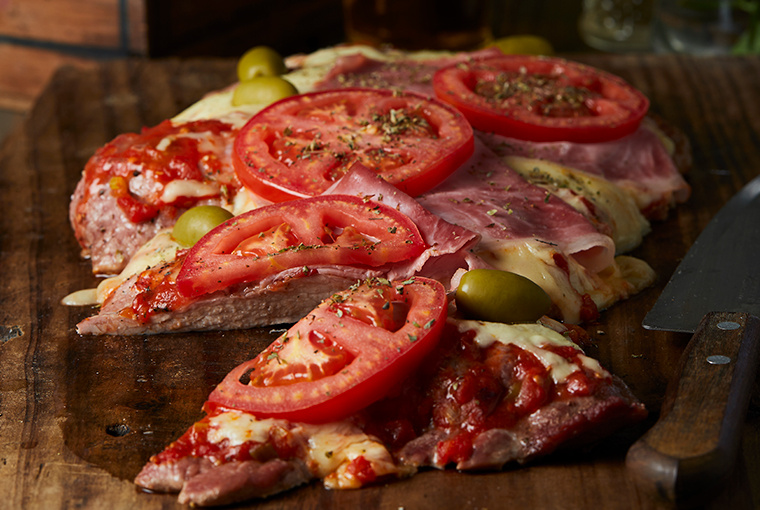

Podemos cocinar el matambre de cerdo a la pizza, tanto a la parrilla como al horno. Es una carne tierna que le podemos agregar una salsa de pizza por arriba con queso, jamon y algunas rodajas de tomate. Algunos le ponen aceitunas y oreganos, eso va en cada uno.
Llevar a horno medio y cocinar hasta que absorba toda la leche.
Colocarlo en la parrilla, y cocinarlo 10 minutos del lado que no tiene grasa.
Darlo vuelta y colocarle la salsa de tomate, la mozzarella. Taparlo con una asadera y tirarle unas brasas arriba para ayudar a que derrita el queso.
Cuando esté derretido el queso, agregar orégano, aceitunas y servir.